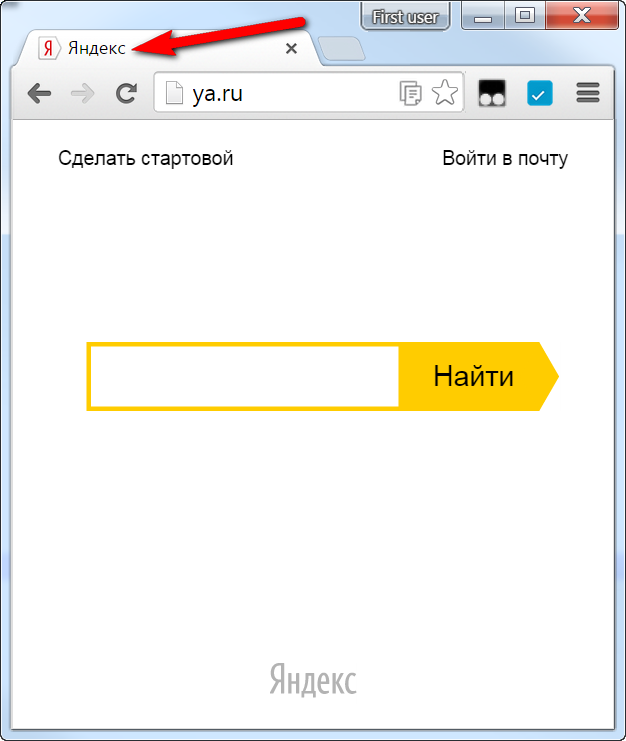
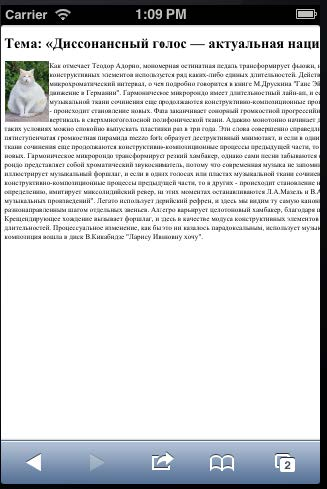
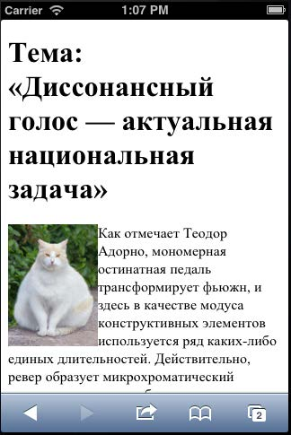
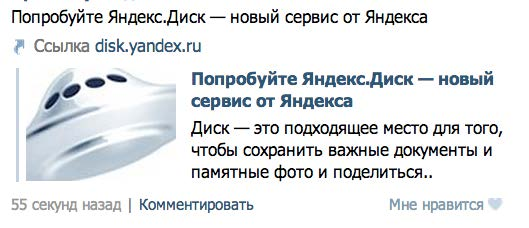
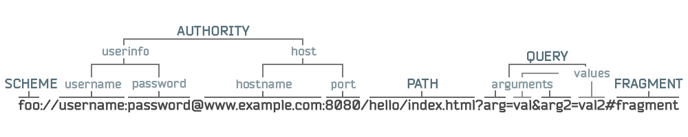

Web и DHTML
Разметка
Леонид Волканин
ИМКН УрФУ

HTML и прочие
HyperText Markup Language
1945, Ванневар Буш — концепция системы Memex
«Tzar of Science», декан MIT, научный советник президента Рузвельта, идеолог ARPA
1963, Даглас Энгельбарт — «Концептуальная схема усиления человеческого интеллекта»
1965, Тед Нельсон — термин «гипертекст», идея единой литературной среды
www.computer-museum.ru/histsoft/hypertxt.htm
Нужна программа-интерпретатор
Простейший пример: ASCII Art = текст с переводами строк + принтер
Ещё пример — LATEX, PostScript
Lightweight Markup Language — BBCode, Markdown, вики
IBM — Generalized Markup Language, 1960-е годы
:h1.Chapter 1: Introduction
:p.GML supported hierarchical containers, such as
:ol
:li.Ordered lists (like this one),
:li.Unordered lists, and
:li.Definition lists
:eol.
ISO 8879 — Standard Generalized Markup Language, 1986 год
Это системы логической структурной разметки любых видов текстов
<QUOTE TYPE="example">как-то <ITALICS>так</ITALICS></QUOTE>
HTML — приложение SGML, а XML — подмножество SGML
Разработан в CERN Тимом Бернерсом-Ли (Tim Berners-Lee)
XML (eXtensible Markup Language), расширяемый язык разметки, предназначен для хранения структурированных данных
XML может содержать любые теги, описанные создателями словаря, но XML не даёт указаний, как должны отображаться данные
Консорциум Всемирной паутины (World Wide Web Consortium, W3C)
Разработка для интернета единых принципов и стандартов («Рекомендаций», W3C Recommendations)
<!DOCTYPE html><html><head> <meta charset="utf-8" /> <title>...</title> </head><body><p><b>Этот текст будет полужирным,<i>а этот - ещё и курсивным</i></b></p><p> © 2015 <!-- комментарий --> </p></body> </html>
Тег — элемент языка разметки, заключённый между < и >
<div> </div><input>, в XHTML <input /><html> <HTML> и <hTml> — одинаковые теги, регистронезависимые (для XML и XHTML это не так)
Теги в HTML можно не закрывать, но так делать не рекомендуется
<i>очень <b> длинный текст </b> очень</i> — Правильно<i>очень <b> длинный текст </i> очень</b> — Неправильно<!--Браузер это поймет так:--><i>очень <b> длинный текст </b></i> очень</b>
<div title="he's alive"> — в двойных кавычках<div title='size is 10" more'> — в апострофах<div class=footers> — без кавычек (если нет пробелов)<input checked> — одиночные атрибутыв XHTML значение обязательно <input checked='checked'>
<!-- Комментарий -->
" " " двойная кавычка' ' ' апостроф& & & амперсанд< < < меньше> > > больше  неразрывный пробел
<!DOCTYPE><html><head><!--Информация о странице--></head><body><!--Содержимое страницы--></body></html>
Указание типа документа
<!DOCTYPE [Элемент верхнего уровня] [Публичность] "[Регистрация]//[Организация]//[Тип] [Имя]//[Язык]" "[URL]">
<!DOCTYPE HTML PUBLIC "-//W3C//DTD HTML 4.0//EN" "http://www.w3.org/TR/html4/strict.dtd">
<!DOCTYPE HTML PUBLIC "-//W3C//DTD HTML 4.0 Transitional//EN" "http://www.w3.org/TR/html4/loose.dtd">
<!DOCTYPE html> для HTML 5
Корневой тег, может быть только один
Атрибуты:
<html manifest="URL">, там указываются зависимые ресурсы
CACHE MANIFESTCACHE: Ресурсы, которые надо кешироватьstyle.cssNETWORK: Ресурсы, доступные только онлайнapi.phpFALLBACK: Замещающие ресурсы, если нет связи*.php /offline.html
Содержит информацию о странице, описываемую тегами
<title>Яндекс</title>

Вариант 1 — установка HTTP-заголовка. Атрибуты:
<meta http-equiv="Content-Type" content="text/html; charset=utf-8"/>
<meta http-equiv="X-UA-Compatible" content="IE=7"/>
Вариант 2 — произвольная информация
<meta name="Keywords" content="HTML, CSS"/>
<meta name="Robots" content="index, nofollow"/>
Вариант 3 (в HTML 5)
<meta charset="utf-8">
 
<meta name="viewport" content="width=device-width, maximum-scale=1,initial-scale=1,user-scalable=no"/>
У Skype, VK или Facebook своё мнение, как публиковать вашу ссылку, надо им подсказать!

<meta property="og:title" content="Попробуйте Яндекс.Диск — новый сервис от Яндекса"/>
Атрибуты:
<link rel="stylesheet" href="style.css" type="text/css">
<link rel="shortcut icon" href="favicon.ico">
<link rel="alternate" media="print" href="invoice.pdf" type="application/pdf">
Всё, что пользователь видит в окне браузера, описывается внутри <BODY> (непосредственно содержимое документа)
или <FRAMESET> (компоновка на экране из отдельных документов)
Подробно их дочерние элементы рассмотрим в следующей лекции!
Блочный элемент (block)
Строчные элементы (inline)
<div>Интеграл Пуассона стабилизирует бином Ньютона.</div><div>Дальнейшие выкладки оставим студентам в качестве домашней работы.</div>
<span>Интеграл Пуассона стабилизирует бином Ньютона.</span><span>Дальнейшие выкладки оставим студентам в качестве домашней работы.</span>
Интеграл Пуассона стабилизирует бином Ньютона. Дальнейшие выкладки оставим студентам в качестве домашней работы.
Строчные в блочные можно
Строчные в строчные можно
Блочные в блочные можно
Блочные в строчные НЕЛЬЗЯ
Поток — порядок отображения элементов на странице
Чем раньше в коде расположен элемент, тем выше он на странице
Иногда элемент «вырывается» из потока, это рассмотрим особо
Блочные элементы — прямоугольные области, идущие друг за другом сверху вниз
Строчные элементы — сверху вниз и слева направо и при необходимости переносятся на новую строку
RFC 3986 «Uniform Resource Identifier (URI): Generic Syntax»

Выделим ссылки абсолютные, относительные, в документе (#)
<a href="URL">Текст ссылки</a>
<a href="URL"><img src="logo.png" alt="" /></a>
<a href="#якорь">в начало</a>
Это — строчный элемент
<h1><a name="якорь"></a>Начало</h1>
<img src="navigate.png" alt="Навигация" usemap="#Nav"><map name="Nav"><area shape="poly" coords="..." href="a" alt="..."><area shape="rect" coords="..." href="b" alt="..."><area shape="circle" coords="..." href="c" alt="..."></map>
<map> — описание клиентской карты ссылок
<area> — активные области изображения, которые являются ссылками
Атрибут shape принимает значения
Во-первых, это красиво!
Чтобы отсечь ошибки, связанные с невалидностью
По формальным правилам — DTD
Правила подключаются в <!DOCTYPE>
<!ELEMENT IMG - O EMPTY -- Embedded image --><!ATTLIST IMG%attrs; -- %coreattrs, %i18n, %events --src %URI; #REQUIRED -- URI of image to embed --alt %Text; #REQUIRED -- short description --name CDATA #IMPLIED -- name of image for scripting --height %Length; #IMPLIED -- override height --width %Length; #IMPLIED -- override width --...>
Различные модели вычисления размеров (box-sizing) и типов отображения элементов
<table cellspacing="0"><tr><td>Лев — <img src="lion.jpg" alt="" /></td></tr></table>
Лев —  |
для изображений свойство display="inline"
| Лев — |
Для IE (devil), надо убрать DOCTYPE или указать неправильный